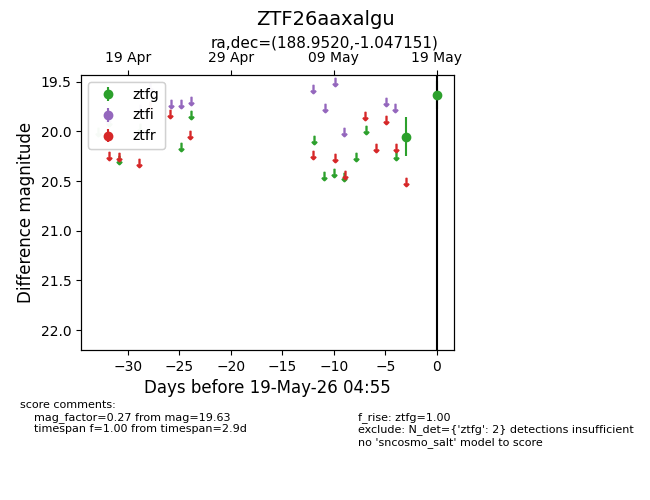
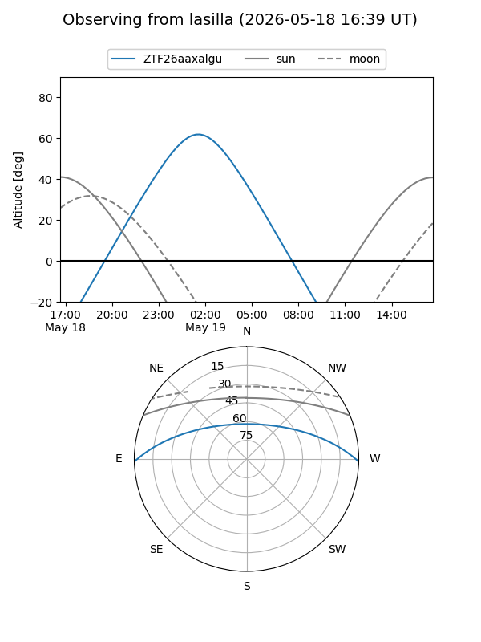
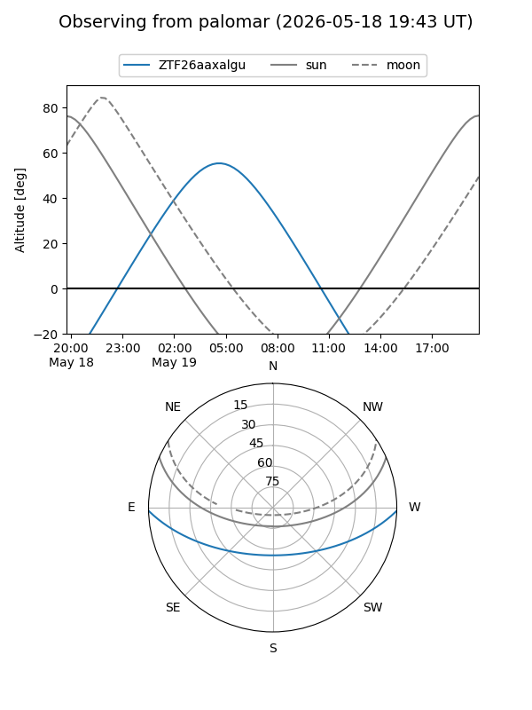

ZTF26aaxalgu
Target ZTF26aaxalgu at 2026-05-19 04:57
Aliases and brokers:
FINK: link
Lasair: link
ALeRCE: link
alt names
ZTF26aaxalgu (ztf,fink_ztf)
Coordinates:
equatorial (ra, dec) = 188.9520,-1.04715
equatorial (HMS+DMS) = 12:35:48.49,-01:02:49.74
galactic (l, b) = (294.7027,+61.57461)
Flags:
Photometry:
last ztfg=19.63
2 ztfg detections
Lightcurve

Visibility


Additional plots